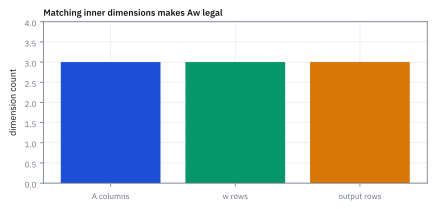

4.3 The Martingale Betting System
ชนะเกือบทุกรอบ แต่ไม่ได้มีกำไรเฉลี่ย: แยกขนาดเดิมพัน เงินทุน และเวลาหยุด
มีคนเสนอระบบเดิมพันให้คณะกรรมการความเสี่ยง: เริ่มที่ \$1,000 แพ้แล้วทบสองเท่า ชนะครั้งเดียวก็คืนทุนและได้กำไร \$1,000 ถ้ามีทุน \$1,000,000 ระบบนี้ชนะมากกว่า 99.8% ของรอบ ควรอนุมัติหรือไม่?
เปิดคำตอบตั้งต้น
อัตราชนะยังตอบไม่ได้ว่าคุ้ม ระบบนี้เล่นได้สูงสุดเก้าขั้น หากแพ้รวดจะเสีย \$511,000 โอกาสนั้นคือ 1/512 ในเกมยุติธรรม เมื่อนับทั้งกำไรเล็กและขาดทุนใหญ่ ค่าเฉลี่ยต่อรอบเท่ากับศูนย์ก่อนค่าธรรมเนียม
เราจะตรวจข้ออ้างทีละชั้น: พีชคณิตคืนทุนถูกหรือไม่ ทุนจริงวางได้กี่ไม้ และเหตุใดการหยุดตอนชนะจึงไม่ใช่ช่องโหว่ของ martingale
1. กติกาที่ใช้ตลอดบทเรียน
ข้อมูลทั้งหมดต่อไปนี้เป็นแบบจำลองสมมติ หนึ่ง ไม้ คือการเดิมพันหนึ่งครั้ง; หนึ่ง รอบ เริ่มใหม่ที่เดิมพันฐาน $b$ และจบเมื่อชนะครั้งแรกหรือเล่นครบเพดาน $N$ ไม้ ให้ $B$ เป็นทุนเริ่มต้น ทั้ง $b,B$ และกำไรขาดทุนวัดเป็นดอลลาร์
- ในเกมหลัก ผลแต่ละไม้เป็นอิสระ ชนะและแพ้อย่างละครึ่ง ชนะได้กำไรสุทธิเท่ากับเงินที่วาง แพ้เสียเงินที่วางทั้งหมด ไม่มีค่าธรรมเนียมหรือดอกเบี้ย
- เดิมพันไม้ถัดไปตัดสินจากผลที่เห็นแล้ว ไม่ได้รู้ผลล่วงหน้า ข้อมูล $\mathcal F_n$ ในที่นี้หมายถึงประวัติถึงไม้ที่ $n$
- $W_n$ เป็นกำไรขาดทุนของรอบ ไม่ใช่ยอดเงินทั้งบัญชี เริ่ม $W_0=0$ และตรึงค่าไว้หลังหยุด
ชื่อระบบเดิมพัน “martingale” ไม่ได้ทำให้ทุกเกมยุติธรรมโดยอัตโนมัติ ถ้าเกมมีความเสียเปรียบหรือมีต้นทุน กระบวนการกำไรสุทธิย่อมเปลี่ยนไป
2. ทำไมชนะครั้งเดียวจึงได้กำไรฐานคืนมา
เมื่อแพ้ $k-1$ ไม้ จะวางไม้ที่ $k$ เท่ากับ $b2^{k-1}$ ให้ $L_k$ เป็นขาดทุนสะสมเมื่อแพ้ครบ $k$ ไม้ เขียนผลรวมแล้วคูณสองและลบกันเพื่อตัดพจน์กลาง
คำว่า “ได้กำไร $b2^{k-1}$” เป็นกำไรสุทธิของไม้ที่ชนะ ไม่ใช่เงินคืนรวมทุนเดิมพัน พีชคณิตคืนทุนถูกต้อง แต่ใช้ได้ต่อเมื่อเราวางไม้ที่ต้องการได้จริง
| ไม้ที่ | เดิมพัน (USD) | แพ้สะสม (USD) | กำไรรอบถ้าชนะ (USD) |
|---|---|---|---|
| 1 | 1,000 | 1,000 | 1,000 |
| 2 | 2,000 | 3,000 | 1,000 |
| 3 | 4,000 | 7,000 | 1,000 |
| 5 | 16,000 | 31,000 | 1,000 |
| 9 | 256,000 | 511,000 | 1,000 |
| 10 | 512,000 | 1,023,000 | 1,000 หากมีทุนพอ |
Figure 4.3a — เป้ากำไรเท่าเดิม แต่เงินที่ต้องเสี่ยงเพิ่ม

ภาพแสดงเดิมพันและขาดทุนสะสมถึงขั้นที่เก้า แกนตั้งเป็นพันดอลลาร์และใช้สเกล log ฐานสอง จึงต้องอ่านตัวเลข ไม่ตีความเส้นที่ดูเกือบตรงว่าเงินเพิ่มช้า เป้ากำไรยังคงเป็น 1,000 ดอลลาร์
3. ทุนหนึ่งล้านไม่ได้แปลว่าเดินบันไดได้หนึ่งพันขั้น
ต้องมีเงินพอจ่ายเดิมพันทั้งหมดตามเส้นทางที่แพ้รวด เงื่อนไขคือ $L_N\le B$ ไม่ใช่ $Nb\le B$
หลังแพ้เก้าไม้เสีย 511,000 ดอลลาร์ ยังเหลือ $1{,}000{,}000-511{,}000=489{,}000$ ดอลลาร์ แต่ไม้ที่สิบต้องใช้ 512,000 ดอลลาร์ จึงเดินต่อไม่ได้ บทเรียนนี้เรียกว่า บันไดพัง ไม่ใช่บัญชีเหลือศูนย์ หากมีเพดานเดิมพันรายไม้ก็ต้องตรวจข้อจำกัดนั้นเพิ่มด้วย ถ้า $B\lt b$ จะเริ่มเล่นไม่ได้เลย
4. ทำไมเงินของรอบยังเป็น martingale ในเกมยุติธรรม
สำหรับเวลา $n$ ที่จำกัด กระบวนการรู้ค่าได้จากอดีตและมีขนาดจำกัด จึง adapted และ integrable เหลือตรวจค่าเฉลี่ยก้าวถัดไป แยกเป็นสองกรณี: หยุดแล้วค่าไม่เปลี่ยน; ยังเล่นอยู่แปลว่าแพ้มาทุกไม้
เช่น หลังแพ้สองไม้ $W_2=-3{,}000$ ไม้ถัดไปวาง 4,000 ดอลลาร์ ถ้าชนะกำไรรอบเป็น 1,000 ถ้าแพ้เป็น −7,000 ค่าเฉลี่ยคือ −3,000 เท่าเดิม เมื่อหยุดที่เพดานเก้าไม้ก็ตรึง $W_n$ ไว้เช่นกัน การเปลี่ยนขนาดเดิมพันที่เลือกจากอดีตไม่ได้สร้าง conditional drift จากเกมยุติธรรม
5. ค่าเฉลี่ยและความเสี่ยงของหนึ่งรอบมีคนละหน้าที่
ให้ $\tau$ เป็นไม้ที่ชนะครั้งแรก และ $\tau_N=\min(\tau,N)$ เป็นเวลาหยุดจริง หนึ่งรอบจบด้วย $+b$ เว้นแต่แพ้รวดทั้ง $N$ ไม้
เมื่อ $N=9$ อัตราชนะคือ $511/512\approx99.8047\%$ และโอกาสบันไดพังคือ $1/512\approx0.1953\%$ แต่ผลขาดทุนใหญ่กว่ากำไร 511 เท่า
ใช้ $\operatorname{Var}(W)=\mathbb E[W^2]$ ได้เพราะค่าเฉลี่ยเป็นศูนย์ SD กว่าสองหมื่นดอลลาร์ไม่ใช่ขาดทุนสูงสุด ขาดทุนสูงสุดของรอบนี้คือ 511,000 ดอลลาร์ ทั้งสองตัวเลขตอบคนละคำถาม
Figure 4.3b — ชนะบ่อยไม่ช่วยให้ค่าเฉลี่ยเป็นบวก

แท่งกราฟเป็นผลลัพธ์คูณความน่าจะเป็นแล้ว ไม่ใช่ขนาดเงินที่ได้หรือเสียจริง ฝั่งชนะให้ประมาณ +998.05 ดอลลาร์ ฝั่งแพ้ให้ −998.05 ดอลลาร์ รวมเป็นศูนย์
6. กฎหยุดใช้ได้เมื่อเงื่อนไขครบ
Stopping time คือเวลาหยุดที่เมื่อถึงไม้ $n$ เราตัดสินได้จาก $\mathcal F_n$ ว่าหยุดแล้วหรือยัง การหยุดเมื่อชนะครั้งแรกเข้าเงื่อนไขนี้ ส่วนการหยุดที่ “จุดสูงสุดของทั้งเส้นทาง” โดยดูอนาคตก่อน ไม่เข้าเงื่อนไขทั่วไป
สำหรับ martingale ที่ integrable และเวลาหยุดมีขอบเขตคงที่ $\tau_N\le N$ ทฤษฎี optional stopping ให้ค่าเฉลี่ยตอนหยุดเท่ากับค่าเริ่มต้น ในกรณีนี้เราตรึงกำไรหลังหยุดไว้แล้ว จึงเห็นผลได้ด้วย tower property โดยตรง
คำว่า “มีเพดาน” ในเหตุผลนี้คือมีจำนวนไม้สูงสุดที่ไม่สุ่ม ไม่ใช่เพียงรู้ว่าเกมน่าจะจบเร็ว ส่วนกรณีไม่จำกัดเวลาอาจใช้ทฤษฎีรูปอื่นได้ แต่ต้องตรวจเงื่อนไขเพิ่มเติม
7. แล้วถ้ามีทุนไม่จำกัดและรอจนชนะล่ะ?
ในเกมเหรียญอิสระยุติธรรม $P(\tau\gt n)=2^{-n}$ จึงชนะในเวลาจำกัดด้วยความน่าจะเป็นหนึ่ง (almost surely) ไม่ใช่ชนะทุกเส้นทาง เพราะเส้นทางแพ้ตลอดยังเขียนขึ้นได้แต่มีความน่าจะเป็นศูนย์ ในอุดมคตินี้ $W_\tau=b$ เกือบแน่นอน
รอเฉลี่ยสองไม้ไม่ได้แปลว่าใช้เงินน้อย เดิมพันปลายบันไดเกิดยากแต่ใหญ่พอดีชดเชยความหายาก เราจึงสลับลิมิตกับค่าเฉลี่ยจากเกมมีเพดานไม่ได้: $W_{\tau\wedge n}\to b$ เกือบแน่นอน แต่ค่าเฉลี่ยของทุกตัวก่อนลิมิตยังเป็นศูนย์
ความคลาดเคลื่อนเฉลี่ยสัมบูรณ์ไม่ลดเป็นศูนย์ ครอบครัวนี้ไม่มี uniform integrability กล่าวคือเราไม่สามารถควบคุมเงินในหางให้เล็กพร้อมกันทุก $n$ ได้ สำหรับ $K\gt b$ เลือก $n$ ให้ $b(2^n-1)\gt K$ ส่วนหางมีค่าเฉลี่ยขนาด $b(1-2^{-n})$ ซึ่งไม่หายไป แม้ $\mathbb E[\tau]=2$ ก็ยังไม่พอ เพราะขนาดการเปลี่ยนแปลงแต่ละไม้ไม่มีขอบเขตร่วม
Figure 4.3c — ผลงานเรียบในช่วงที่หางยังไม่มาถึง

แกนตั้งเป็นพันดอลลาร์ หลายเส้นไต่ขึ้นครั้งละ 1,000 ดอลลาร์ ก่อนรอบที่แพ้รวดทำให้ลดลง 511,000 ดอลลาร์ ภาพใช้เพดานเก้าขั้นคงที่และหยุดที่การพังครั้งแรก ไม่ได้เพิ่มเพดานตามกำไรสะสม
8. เล่นซ้ำ: ต้องตรึงนโยบายก่อนคูณความน่าจะเป็น
สมมติแต่ละรอบใช้เหรียญชุดใหม่ที่อิสระ คง $b=1{,}000$ และ $N=9$ แม้สะสมกำไรได้ และเลิกกลยุทธ์เมื่อบันไดพังครั้งแรก การคงเพดานนี้จำเป็นต่อสูตรต่อไปนี้ หากนำกำไรไปเพิ่มจำนวนขั้นต้องวิเคราะห์ใหม่
| รอบที่เล่น | โอกาสยังไม่พัง |
|---|---|
| 100 | 82.24% |
| 500 | 37.62% |
| 2,000 | 2.00% |
ที่จำนวนเต็ม 355 รอบ โอกาสรอดต่ำกว่าครึ่งเป็นครั้งแรก จำนวนรอบจนพังมีค่าเฉลี่ย 512 รอบ รวมรอบที่พังด้วย จึงมีรอบชนะเฉลี่ย 511 รอบ ไม่ใช่ทุกคนต้องชนะ 511 รอบพอดี กำไรสุทธิคาดหมายเมื่อนับรวมรอบที่พังคือ $511(1{,}000)-511{,}000=0$
Figure 4.3d — โอกาสรอดของนโยบายเก้าขั้น

ค่าที่กำกับในภาพคือ 82.2%, 37.6% และ 2.0% ที่ 100, 500 และ 2,000 รอบตามลำดับ เป็นโอกาสไม่พบการแพ้รวดเก้าไม้ในรอบใดเลย ไม่ใช่โอกาสที่กำไรรวมจะติดลบ
9. เพิ่มทุนซื้อความทนทานได้ ไม่ได้ซื้อความได้เปรียบ
เพิ่มทุนจากหนึ่งล้านเป็น \$1,023,000 จ่ายบันไดสิบขั้นได้พอดี เป็นการเพิ่มเพียง \$23,000 หรือ 2.3% ของทุนเดิม ไม่ใช่เพิ่มทุนเกือบเท่าตัว สิ่งที่เกือบเท่าตัวคือ ขาดทุนสูงสุดของรอบ จาก 511,000 เป็น 1,023,000 ดอลลาร์
จุดที่โอกาสรอดเท่ากับครึ่งยืดเป็นประมาณ 709.44 รอบ ประโยคทั่วไปว่า “เพิ่มหนึ่งขั้นต้องใช้ทุนเกือบสองเท่า” หมายถึงเปรียบเทียบทุนขั้นต่ำ $L_N$ กับ $L_{N+1}$ ไม่ใช่ทุนใด ๆ ที่บังเอิญอยู่ใกล้เกณฑ์ขั้นถัดไป
10. เมื่อเจ้ามือได้เปรียบ: รูเล็ตยุโรป 37 ช่อง
เดิมพันสีที่จ่ายกำไรสุทธิเท่าเงินวาง มีโอกาสชนะ $p=18/37$ และแพ้ $q=19/37$ สมมติการหมุนอิสระและยังวางได้ครบเก้าขั้น ผลสุทธิยังมีสองปลายทางเดิม แต่โอกาสแพ้รวดเป็น $q^N$ ไม่ใช่ $2^{-N}$
ตรวจอีกทางด้วย turnover หรือยอดเงินเดิมพันรวม ซึ่งนับเงินเดิมซ้ำได้เมื่อหมุนมาเดิมพันใหม่ ไม้ที่ $k$ เกิดขึ้นต่อเมื่อแพ้มาก่อน $k-1$ ไม้
เจ้ามือได้เปรียบราว 2.70% ของเงินที่วาง ไม่ใช่ 2.70% ของกำไรเป้าหมาย 1,000 ดอลลาร์ เมื่อยังเดิมพันอยู่ conditional drift เป็นลบ ระบบสุทธิจึงเป็น supermartingale ไม่ใช่ martingale แบบเกมเหรียญ
ลองตรวจข้อเสนอด้วยตัวเอง
- ทุน 50,000 ดอลลาร์ เริ่มเดิมพัน 100 ดอลลาร์ เกมยุติธรรม: เล่นได้กี่ขั้น ขาดทุนสูงสุด โอกาสพัง ค่าเฉลี่ยและ SD ต่อรอบเป็นเท่าไร?
- คงนโยบายจากข้อแรก 100 รอบโดยใช้ผลอิสระ โอกาสไม่พังเท่าไร?
- เพื่อนกล่าวว่า “เวลาชนะครั้งแรกมีค่าเฉลี่ยสองไม้ ดังนั้น optional stopping ต้องให้กำไรศูนย์แม้ทุนไม่จำกัด” ขาดเงื่อนไขอะไร?
เฉลยพร้อมเหตุผล
- $2^N\le501$ ให้ $N=8$ ขาดทุน $100(256-1)=25{,}500$ ดอลลาร์ โอกาสพัง $1/256\approx0.3906\%$ ค่าเฉลี่ยศูนย์และ SD $100\sqrt{255}\approx1{,}596.87$ ดอลลาร์ หลังพังยังเหลือ 24,500 แต่ไม้ถัดไปต้องใช้ 25,600 ดอลลาร์
- $(255/256)^{100}\approx67.61\%$ สูตรนี้ใช้เพดานแปดขั้นคงที่ ไม่เพิ่มตามทุนสะสม
- เวลาหยุดไม่มีขอบเขตคงที่ และ martingale ที่หยุดแบบตัดเพดานไม่มี uniform integrability; เวลารอเฉลี่ยจำกัดเพียงอย่างเดียวไม่รับรองการสลับลิมิตกับค่าเฉลี่ย
นำไปใช้กับการเงินอย่างระวัง
การขายความเสี่ยงหางบางชนิดอาจให้กำไรเล็กบ่อยและขาดทุนใหญ่ไม่บ่อย คล้ายรูปร่างผลลัพธ์นี้ แต่ไม่ได้แปลว่าทุก carry trade หรือกลยุทธ์ขาย option เป็นระบบทบสองเท่า หรือมีโอกาสเท่ากับเกมเหรียญนี้ ต้องตรวจการแจกแจงจริง สภาพคล่อง margin และต้นทุนเป็นรายกลยุทธ์
คำถามที่ควรถามก่อนดู win rate คือ: ขาดทุนต่อเหตุการณ์เท่าไร ต้องใช้เงินระหว่างทางเท่าไร และหยุดด้วยกฎอะไร? ในตลาดจริง dependence และสภาพคล่องอาจทำให้ผลแย่ลงหรือเปลี่ยนไปจากแบบจำลอง ไม่ควรอ้างตัวเลขของเกมนี้เป็นขอบเขตความเสี่ยงที่รับรองได้
JavaScript — แจกแจงเวลาชนะครั้งแรกและตรวจทั้งสองเกม
const near = (a, b, eps = 1e-8) => {
if (!Number.isFinite(a) || Math.abs(a - b) > eps) throw new Error(`${a} != ${b}`);
};
function cycle(base, N, q) {
let mean = 0, second = 0, mass = 0, turnover = 0;
for (let k = 1; k <= N; k++) {
const winHere = q ** (k - 1) * (1 - q);
mean += winHere * base;
second += winHere * base ** 2;
mass += winHere;
turnover += q ** (k - 1) * base * 2 ** (k - 1);
}
const fail = q ** N, loss = base * (2 ** N - 1);
mean -= fail * loss;
second += fail * loss ** 2;
near(mass + fail, 1);
return {fail, loss, mean, sd: Math.sqrt(second - mean ** 2), turnover};
}
const b = 1000, B = 1000000;
const N = Math.floor(Math.log2(1 + B / b));
near(N, 9);
const fair = cycle(b, N, 0.5);
near(fair.loss, 511000); near(B - fair.loss, 489000);
near(fair.mean, 0); near(fair.sd, b * Math.sqrt(511));
near(fair.turnover, 9000);
for (let k = 1; k <= 14; k++) near(b * 2 ** (k - 1) - b * (2 ** (k - 1) - 1), b);
near((1 - fair.fail) ** 500, 0.37624399698567695);
near(Math.log(0.5) / Math.log(1 - fair.fail), 354.54466992917884);
const ten = cycle(b, 10, 0.5);
near(ten.mean, 0); near(ten.loss, 1023000);
near((1 - ten.fail) ** 500, 0.613533860562499);
const roulette = cycle(b, 9, 19 / 37);
near(roulette.mean, -271.2672323666936);
near(roulette.turnover, 10036.88759756768, 1e-6);
near(roulette.mean, -roulette.turnover / 37);
const small = cycle(100, 8, 0.5);
near(small.loss, 25500); near(small.sd, 1596.871942267131);
near((1 - small.fail) ** 100, 0.6761164651095474);
for (let n = 1; n <= 20; n++) near(2 ** -n * b * 2 ** n, b);
near(Math.floor(Math.log2(1 + 99 / 100)), 0);
near(cycle(100, 1, 0.5).mean, 0);
console.log({fair, roulette, small});โค้ดแจกแจงโอกาสชนะในแต่ละไม้และแพ้รวดครบเพดาน จึงไม่ต้องรอให้การจำลองสุ่มพบเหตุการณ์หายากเอง ผลรูเล็ตควรได้กำไรเฉลี่ยประมาณ −271.27 และ turnover 10,036.89 ดอลลาร์ โค้ดตรวจแบบจำลอง ไม่ได้จำลอง margin call หรือสภาพคล่องตลาด
สรุปก่อนเดินต่อ
- การทบสองเท่าเปลี่ยนรูปการแจกแจง แต่ไม่สร้างกำไรเฉลี่ยในเกมยุติธรรมที่มีเพดาน
- ทุนหนึ่งล้านและเดิมพันฐานหนึ่งพันรองรับเก้าขั้น บันไดพังคือเสีย 511,000 ดอลลาร์ ไม่ใช่หมดบัญชี
- 99.8047% ที่ชนะไม่ได้ลบความเสียหายของอีก 0.1953% ต้องดูขนาดเงินด้วย
- เวลาหยุดที่มีขอบเขตใช้ optional stopping ได้; เกมทุนไม่จำกัดต้องตรวจเงื่อนไขเพิ่ม แม้รอเฉลี่ยไม่นาน
- ความน่าจะเป็นเล่นซ้ำอาศัยนโยบายคงที่และความเป็นอิสระ อย่านำไปใช้กับเพดานที่ปรับตามทุนโดยไม่คำนวณใหม่
- หัวข้อ 4.4 จะพบ martingale ที่มีขอบเขตในตัว: สัดส่วนลูกบอล ซึ่งลู่เข้าได้โดยไม่ต้องลู่สู่ค่าเดียวกันทุกเส้นทาง